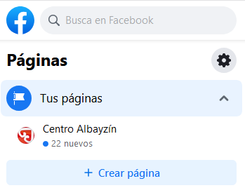
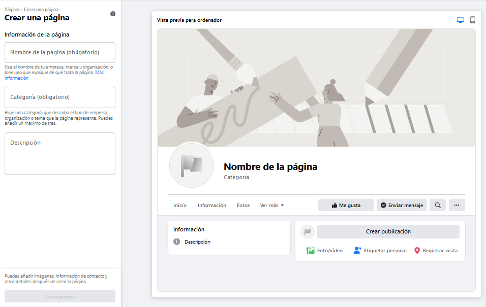
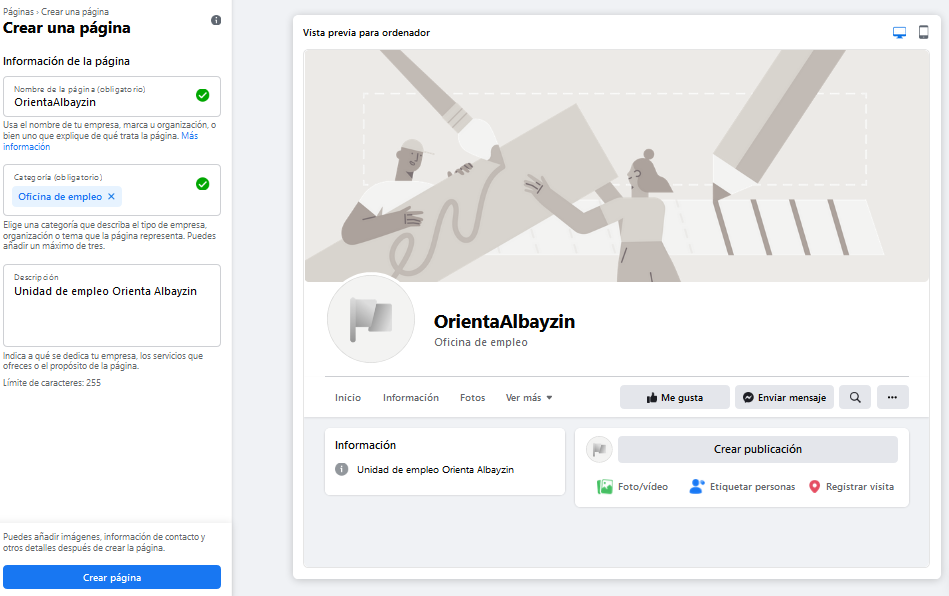
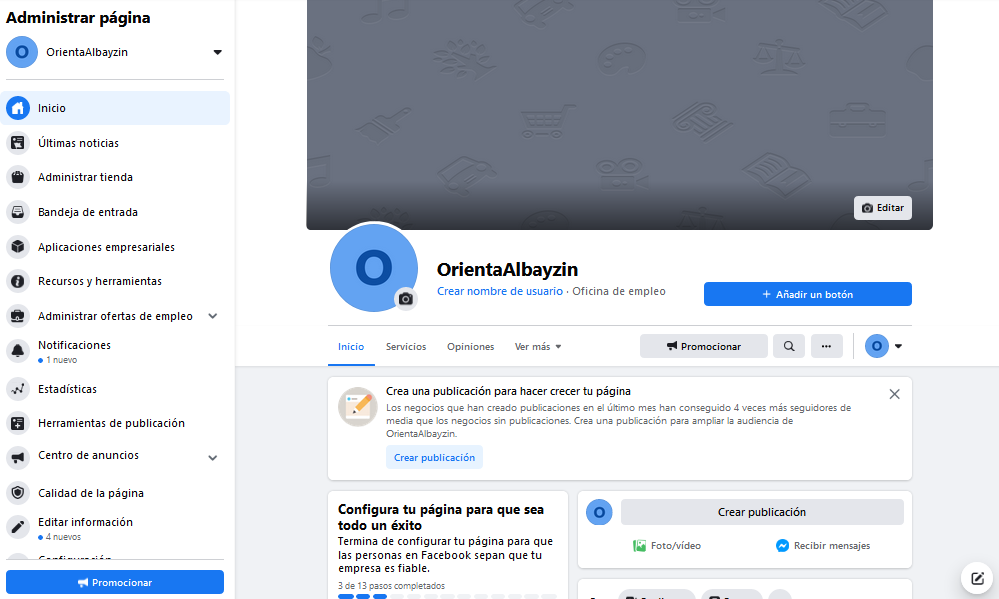

Crear página en Facebook
Hay dos formas básicas de crear una página en Facebook:
Opción 1
La función de las páginas es ayudar a las empresas, las marcas, las organizaciones y las figuras públicas a compartir sus historias y conectarse con las personas. Al igual que los perfiles, las páginas se pueden personalizar con historias, eventos y mucho más. Las personas que indican que les gusta una página, o la siguen, pueden recibir actualizaciones en la sección de noticias.
Para crear una página:
- Ve a facebook.com/pages/create.
- Identificate con tu cuenta
- Elige un tipo de página.
- Completa la información solicitada.
- Haz clic en Crear página.
Nota: Cualquier persona puede crear una página, pero solo los representantes oficiales pueden crear una página para organizaciones, empresas, marcas o figuras públicas.
Opción 2
1. Identificate en Facebook
2. En tu página, aparece a la izquierda la opción
3. Pulsa dicha opción y aparecen las páginas que tienes creadas, y la opción de Crear página

4. Dentro de "Crear página", aparece el menu de opciones y desde ahí podras personalizar tu página

Es importante dar nombre, categoría y descripcion. La zona central pertenece a la vista previa.
5. Una vez rellenos los campos, se nos activará la opción "Crear página". Púlsala.

6. ¡Ya la tienes creada! Ahora a personalizarla.
